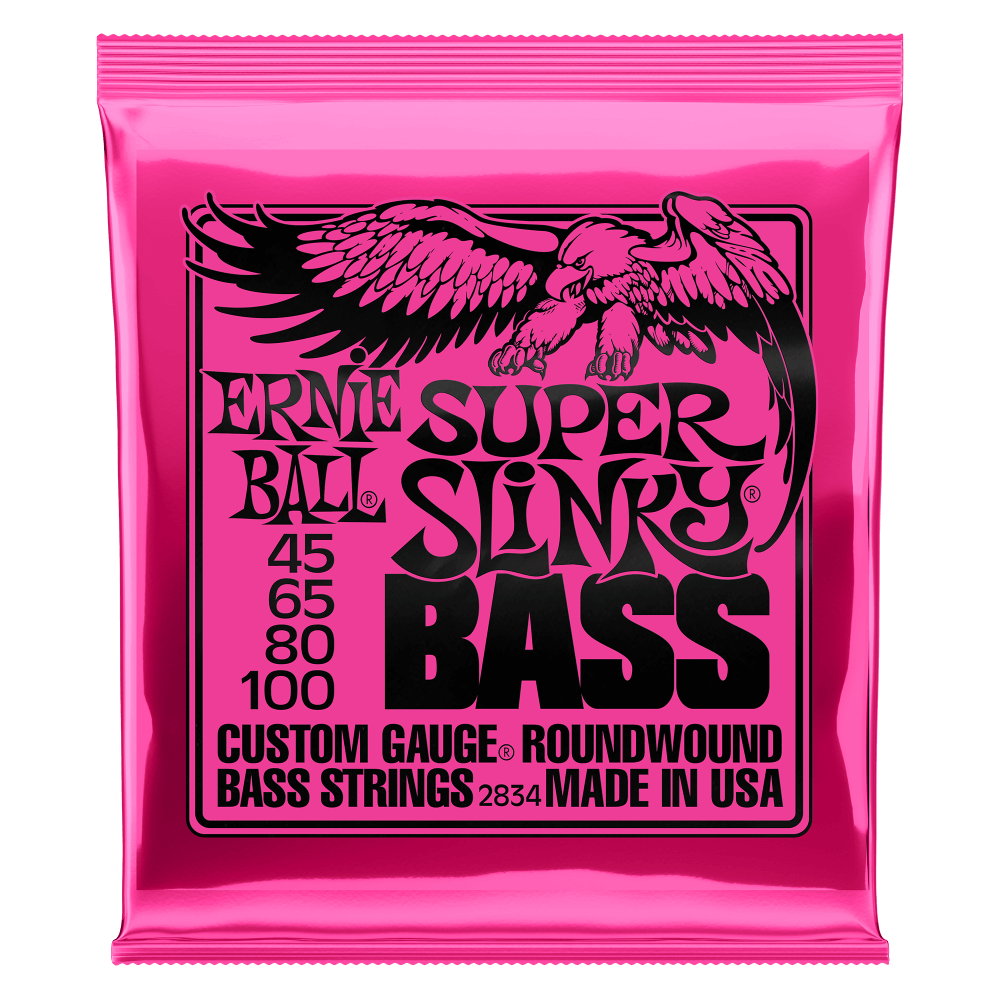
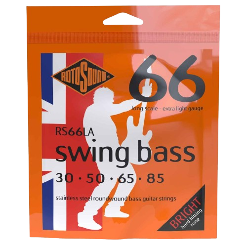
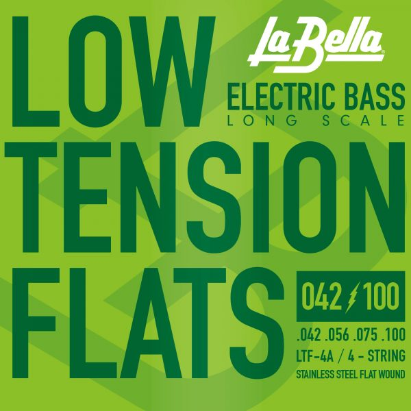

€15.99 The "go-to" for many Bassists. These strings offer a bright and punchy tone
Rotosound Bass Guitar Strings
€15.99 The high-energy and bright sound is a part of the early history of Rock. These strings have gained popularity from legendary Bassist Geddy Lee of Rush
La Bella Bass Guitar Strings
 €15.99 Around since the 1950s, these strings are famous for their classic vintage tone. They have been used by historic Bassist James Jamerson and are the string of choice for Joe Dart. Back to top